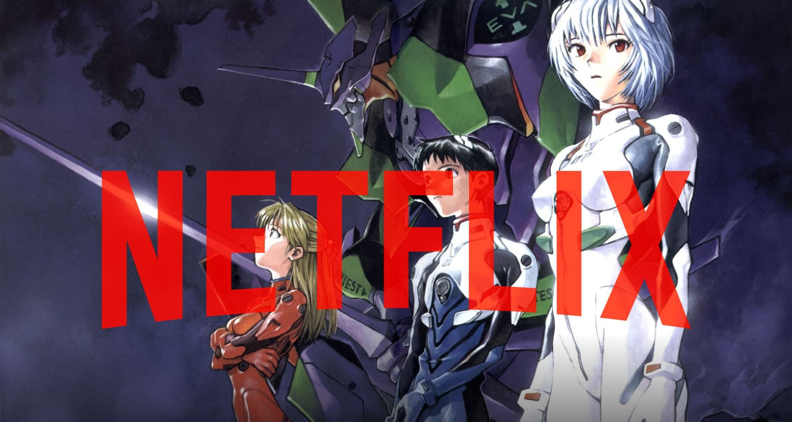

DONDE VERLO
Neon Genesis Evangelion Original
Toda la serie por capitulos de Neon Genesis Evangelion y sus peliculas de 1995 se encuentran en
Netflix

Neon Genesis Evangelion Rebuild
En 2007 hasta 2021 se realizaron los magnificos rebuilds de NGE, estos si son canon, sus cuatro peliculas se encuentran en
Amazon Prime Video
MAIN MENU